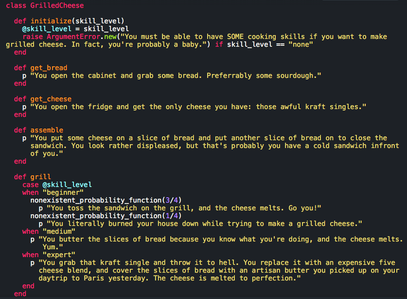
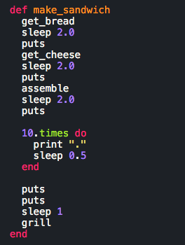
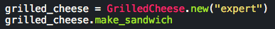
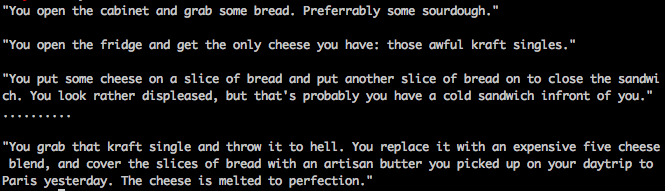

Phase 0: Week 6
An insightful look at your virtual life using CLASSES!
November 9nd, 2015
So learning about classes in Ruby seemed rather familiar to me for some reason, and I couldn't quite put my finger on it until now: PLAYING THE SIMS. Hear me out on this, the objects in the Sims emulate objects in the real world, each containing a variety of functions that your sim can play with. This also extends to the actions that your sim can execute as well, as, for example, making food in sim life consists of a list of functions that must be carried out in order to make a dish. You already know where I'm going with this, so let's make one of the most simple dishes that we can:
GRILLED CHEESE!

Ah yes, the grilled cheese. Basically what you end up making in the Sims if your Sim decides to make a sandwich because apparently that is the only kind of sandwich that exists.
Here I've named the class "GrilledCheese" and have created an instance variable @skill_level that is used in initializing the class. If you haven't played the Sims, essentially you start out with 0 cooking skills, and can increase your skills by reading cookbooks or watching the virtual equivalent of the Food Network for hours on end. This is useful as I can now raise an argument incase a baby sim wants to attempt to make a grilled cheese because that would be a disaster. Or if your sim has the cooking skills of a newborn. Equally disastrous!
I've also created a few different methods in the GrilledCheese class in order to mimic the different steps that it would take to make a grilled cheese. They are separate actions that occur, so I've made them separate methods. The grill method has a few different paths that are possible depending on your skill level. In case of the beginner skill level, apparently you have a 1/4 change of burning your house down. I obviously didn't want to code out a probability method for this post, but let's pretend that it is a real feature that works and everything will be okay. We can then create a final method that combines all of these methods to make a grilled cheese!

As you can see here, we've utilized all of the previous methods (or steps to make a grilled cheese), to actually execute making one! We use sleep in between the methods to simulate time passing as your sim executes each of the methods. Let's actually go ahead and make one:

And the result?

Now that we have specified that our skill_level instance variable is "expert" we were able to utilize it in our make_sandwich method, as the scope extends to all of the methods in the class. The make_sandwich method simply combines the other methods to print out a list of steps that you did to make the sandwich, and how it turned out.
Hope that might have cleared up a few things on how classes work! And now you're saying, couldn't you have explained that example without the Sims? Isn't that how you make a grilled cheese in real life. Well, yes, but you see our virtual lives can often be much more thrilling. Which is why we used making grilled cheese as an example. Until next time!